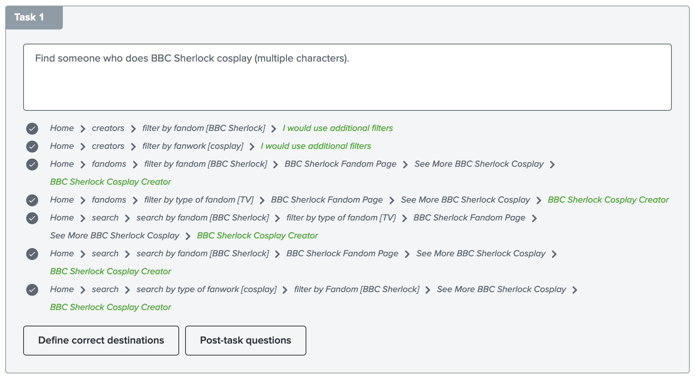
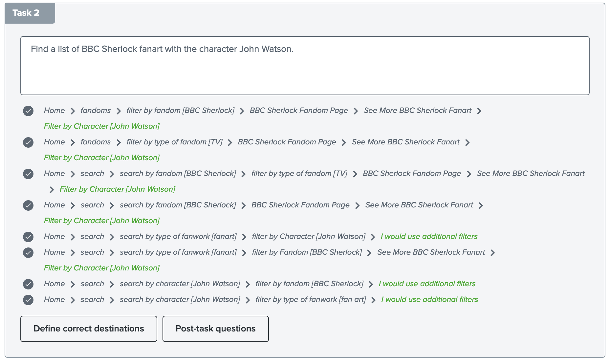
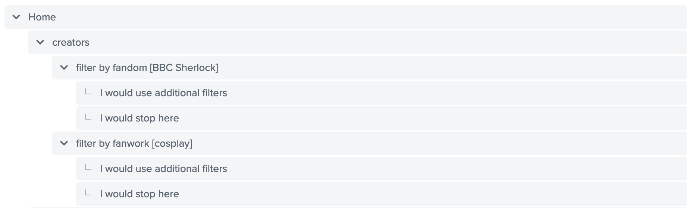
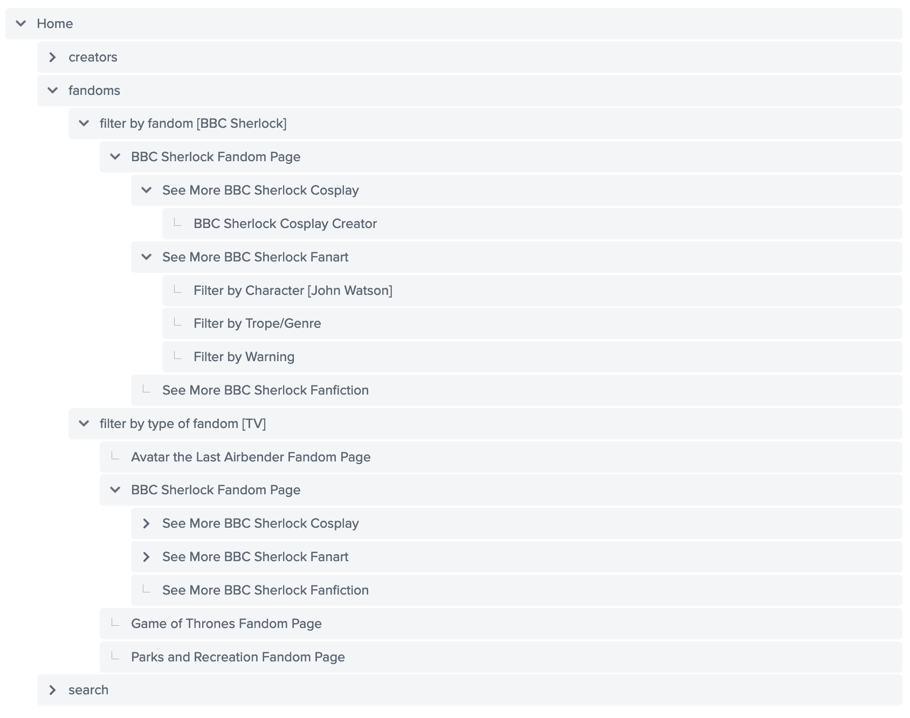
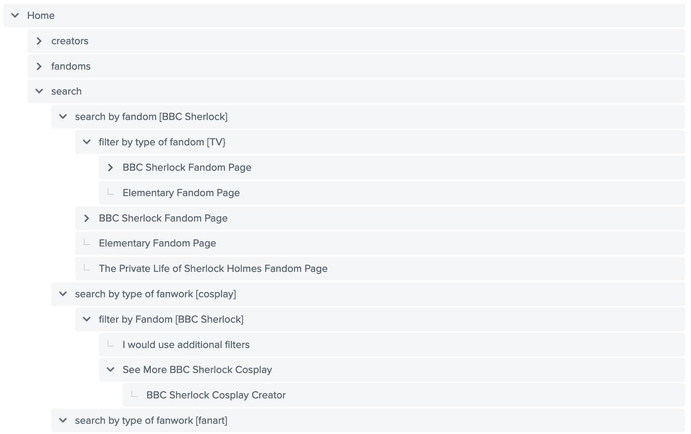
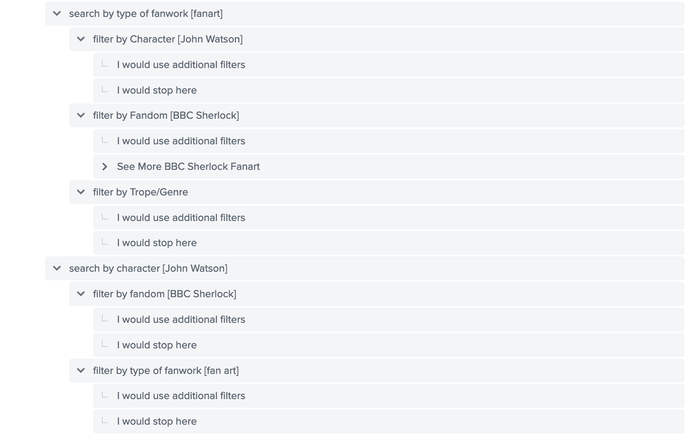

Based on the given brief: to design the Information Architecture of a web-based
information environment. I chose the topic of fanworks with the goal of creating
a website that could bridge the disconnect that forms within fandoms because
of their spread across the internet.
This was one of my favourite projects I completed during my degree; I really
enjoyed organizing complicated information into something usable. While
there were some restraints on the project (i.e. the number of wireframes
and the word count), the approach was up to us to justify. For each of the
following sections, I have included the corresponding deliverable (all were
made in Figma) and snippets of my design justifications.
Initial Research
Interviews
Three Domain Experts were interviewed. This established that, while my topic
was fanworks, fandoms themselves dictate which fanworks hold value. These
experts also emphasized the importance of the ability to block/exclude certain
filters/tags.
Website Review
An informal review of the well-known fanfiction website Archive of Our Own
(AO3) was also performed. AO3 was useful as a database and as a way of understanding
how people customize their fandom experience through user-generated tagging.
Overlap in Data
Overlap between AO3 and expert interviews helped make it possible to determine
which elements were expected across fandoms and fanworks. And because fans
shape their fandom experiences, it was expected to prioritize folksonomies
over structured data (Rosenfeld et al, 2015, pp. 128).
Domain Model
The overall goal of the Domain Model was to identify core concepts and their
relationships between each other. I saw building off of the Hub and Spoke
structure that focused on a “central concept” (Brown, 2011, pp. 80) as the
best approach to accommodate the diversity that exists across fandoms. But
these diverse elements are still interconnected, making Brown’s advice on
“reducing triangles” a vital way in determining core relationships (2011, pp. 82).
Sitemap
Card Sorting (on Optimal Workshop) was used to see if potential users would
be able to condense the 12 types of fandoms from AO3 (alongside others I
had added). Due to the variation in fandom experiences, my hypothesis that
this Card Sort might not help refine these groupings was correct. Noticing
that the only entities in my Domain Model feeding directly into fanworks
were fandoms and creators led to the use of the hybrid Hierarchical and
Database pattern as the user would constantly come across “larger volumes
of information,” and to drawing upon Spencer’s “basic shapes for drawing
an IA,” especially her “part of a page” notation (Spencer, 2010, pp. 180-193, 247).
Before moving forward, Tree Tests (on Optimal Workshop) that incorporated
filtering and covered all potential paths were performed.






Because 50% of tasks were completed using the “Fandoms” navigation, which
would link to thousands of results, that category was broken down so users
looking to browse could have a more manageable experience. “Blended Results”
exists for a similar reason; each category of result utilizes different
facets and showing multiple on the same page could complicate the website
for users. Creating this Sitemap allowed me to take the higher level concepts
from the Domain Model and think about how they could be perceived from a
user's perspective.
User Journey
Building a scenario helped clarify how a user might incorporate filters.
The journey itself was meant to showcase four potential ways a user could
find fanart. Because every user’s background with fandom is different, only
including a preferred path would not showcase the range of options. However,
what could be considered a preferred path based on number of steps and the
specific attributes of the user as established by the goal was highlighted.
The User’s Thoughts were added to establish context and help emphasize why
this journey might be preferred considering their specific background with
the Doctor Who fandom (Brown, 2011 pp. 140). Inspiration was take from Caddick
and Cable’s design of diamond shaped decision points and pointed rectangles
for steps (i.e. actions) (2011, pp. 83). As they used a rounded rectangle
for the starting point (Caddick and Cable, 2011, pp. 83), which in this case
was the Home page, rounded rectangles were used to notate any page the user
might reach. Making sure not to “cross the streams” (Brown, 2011 pp. 130)
helped organize the elements and structure of the journey itself. When a
user is making a more significant step forward in the process, they move
from left to right, but actions that don’t offer as much change to what
the user sees are typically stacked.
Testing and Annotated Wireframes
This section will explain how the results of the testing impacted each wireframe
screen.
Types of Testing
Remote, Moderated Tests with three target users were completed. A Click Test
was also created and posted to Tumblr, targeting online users with a strong
interest in fandoms and fanworks; 28 users completed this study. Questions
were formulated with inspiration from Toub’s approach (2000). To evaluate
structure, grouping, and labeling, the goal from the User Journey was used
as a prompt. Questions about initial actions a user might take and what users
thought clicking on certain elements would do/show were also asked (Toub,
2000, pp. 14-23). The Click Test and Moderated Testing results generally
aligned; a low success rate from the Click Tests coupled with similar results
from the Moderated Tests made a change higher priority.
To prevent users from being biased towards clicking on “Fandoms,” this dropdown
was not initially shown; for similar reasons, filters applied on Screen 3
were unchecked.
Screen 1 - Home
All users during the Moderated Tests were able to vocalize what clicking
on “By Fandom Type” would do, confirming this labeling choice. As users
leaned more towards navigational breakdowns, future iterations could explore
making “Fanworks” a drop-down through the use of Card Sorting to see if
overarching categories related to medium could be established. Additionally,
further testing would help determine the best options for the “All Categories”
drop-down as results from the Moderated Tests were inconclusive.
Screen 2 - Blended Results
While users can choose a category “to clarify their intent,” if they do
not, because the results would not be “homogeneous,” they will see this
Blended Results page (Russel-Rose and Tate, 2013, pp. 144). This approach
was appropriate as there is no preferred path users should take as this
site strives “to encourage [users] to engage in further exploration and
discovery” (Russel-Rose and Tate, 2013, pp. 144). Moderated Testing participants
indicated that they liked seeing this page as it made the results less overwhelming.
Screen 3 - All Results
The default state of each filter would be collapsed due to their size (Russel-Rose
and Tate, 2013, pp. 173-174). “Fanworks, Platforms, and Languages” use traditional,
squared checkboxes as users might want their results to, for example, contain
fanfiction AND fanart. “Fandoms, Warnings, Characters, Tropes and Genres,
and Ships” use a hybrid checkbox and radio button. The circular shape comes
from the radio button to imply that an element can be included OR excluded;
the check and X come from the checkbox and are used to show that multiple
elements within a filter can be selected. Moderated Test participants successfully
recognized how these filters would work. Because the list in “Characters”
can become long, to limit scrolling, pagination was added and the elements
were ordered via popularity (Russel-Rose and Tate, 2013, pp. 150). Since
the use of folksonomies and study of tagging on AO3 means the number of
“Specific References” could be incredibly large, and considering Russel-Rose
and Tate’s explanation, AO3’s “Additional Tags” option, and the importance
of inclusion and exclusion, Search Within was used (2013, pp. 103-104).
Screen 4 - Fanwork Page
Intrinsic, administrative, and descriptive metadata (Spencer, 2010, pp. 187)
are all used and displayed to offer the user thorough information about
any fanwork. However, inspired by the feedback from one of the Moderated
Tests (the user felt there was not enough focus on the image), a Five Second
Test could be used to see what information users are drawn to on this page
(Booth, 2022) and then, once they have had more time to look at the page,
ask them if that information aligns with what they value most. When asked
where to find more information about the creator of this fanwork, 82% of
Click Test participants clicked on “I_Met_DT” (expected) and 11% went to
the Tumblr link. In the Moderated Tests, users went to “I_Met_DT,” Tumblr,
or to Tumblr and then back to “I_Met_DT,” if unsatisfied. Future testing,
could be used to determine if showing users a Creator page before this one
would prompt more of them to remain on this website.
Booth, T. (2022) ‘Week 10 Evaluating Information Architectures’ (Lecture Notes) INM401 Information Architecture. City, University of London. 7 December.
Brown, D. (2011) Communicating Design Second Edition Developing Website Documentation for Design and Planning. Berkley, California: New Riders.
Caddick, R. and Cable, S. (2011) Communicating the User Experience A Practical Guide for Creating Useful UX Documentation. West Sussex, United Kingdom: John Wiley & Sons Ltd.
‘Cosplay’ (2022) Wikipedia. Available at: https://en.wikipedia.org/wiki/Cosplay (Accessed: 29 December 2022).
‘Category: Tropes & Genres’ (2020) Fanlore. Available at: https://fanlore.org/wiki/Category:Tropes_%26_Genres (Accessed: 3 November
2022).
‘Crossover’ (2022) Fanlore. Available at: https://fanlore.org/wiki/Crossover (Accessed: 29 December 2022).
‘Fanart’ (2022) Fanlore. Available at: https://fanlore.org/wiki/Fanart (Accessed: 29 December 2022).
‘Fandom’ (2022) Wikipedia. Available at: https://en.wikipedia.org/wiki/Fandom (Accessed: 3 November 2022).
‘Fanfiction’ (2022) Fanlore. Available at: https://fanlore.org/wiki/Fanfiction (Accessed: 29 December 2022).
‘Fanwork’ (2022) Fanlore. Available at: https://fanlore.org/wiki/Fanwork (Accessed: 3 November 2022).
‘Genre’ (2022) Fanlore. Available at: https://fanlore.org/wiki/Genre (Accessed: 3 November 2022).
Gibbon, C. (No date) ‘What is content modeling’, Cleve Gibbon, (No date) Available at: http://www.clevegibbon.com/content-modeling/what-is-
content-modeling/ (Accessed: 10 November 2022).
Organization for Transformative Works. (No date) Archive of Our Own beta. Available at: https://archiveofourown.org/ (Accessed: 1 November
2022).
Organization for Transformative Works. (No date) Symbols we use on the Archive. Available at: https://archiveofourown.org/help/symbols-
key.html (Accessed: 30 December 2022).
Rosenfeld, L., Morville P., and Arango, J. (2015) Information Architecture: For the Web and Beyond (4th Edition). Sebastopol, California:
O’Reilly Media, Inc.
Russel-Rose, T. and Tate, T. (2013) Designing the Search Experience The Information Architecture of Discovery. Waltham, Massachusetts: Elsevier Inc.
Spencer, D. (2010) A Practical Guide to Information Architecture. Penarth, United Kingdom: Five Simple Steps.
Toub, S. (2000) Evaluating Information Architecture A Practical Guide to Assessing Website Organization. Argus Associates.
‘Transformative Work’ (2022) Fanlore. Available at: https://fanlore.org/wiki/Transformative_Work (Accessed: 3 November 2022). ‘Trope’ (2022) Fanlore. Available at: https://fanlore.org/wiki/Trope (Accessed: 3 November 2022).
‘Warnings’ (2022) Fanlore. Available at: https://fanlore.org/wiki/Warnings (Accessed: 3 November 2022).